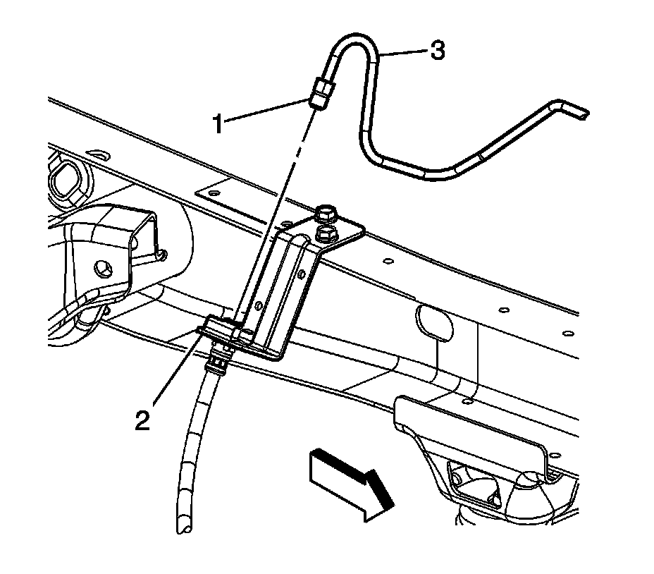
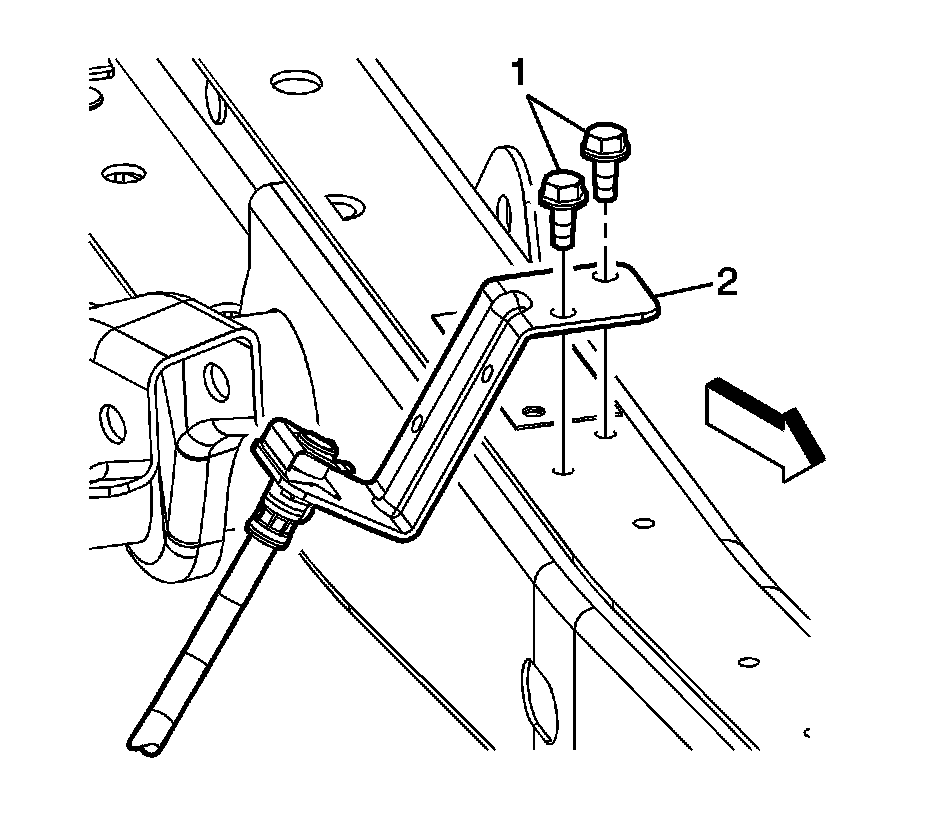
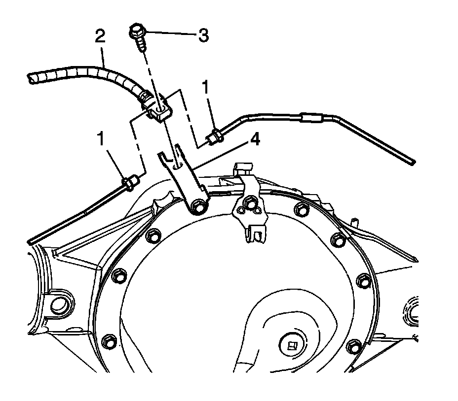

Rear Brake Hose Replacement (Frame to Rear Axle 2500 Series)
Rear Brake Hose Replacement (Frame to Rear Axle 2500 Series)
Removal Procedure
Important: The mounting bracket and brake hose are serviced as an assembly.
1. Raise and support the vehicle. Refer to Lifting and Jacking the Vehicle.
2. Clean the dirt and debris from the brake hose and brake pipe fitting.

Important: Use a backup wrench when removing or installing brake hose or brake pipe fittings.
3. Using a backup wrench, remove the brake pipe fitting (1) from the brake hose (2).
Important: Install a rubber plug or cap to prevent brake fluid leakage and contamination of the brake system.
4. Remove the brake pipe (3) from the brake hose (2).

5. Remove the mounting bracket bolts (1) from the mounting bracket (2).

6. Remove the brake pipe fittings (1) from the brake hose (2).
7. Remove the brake hose bracket mounting bolt (3) from the mounting bracket (4).
8. Remove the brake hose and bracket assembly.
Installation Procedure
1. Position the brake hose (2) to the rear axle housing mounting bracket (4).
Important:
^ The brake hose must NOT be twisted during installation.
^ Leave the brake hose bracket loose, this will ease in installation the brake pipe fittings in the brake hose.
Install the brake hose mounting bracket bolt (3).
2. Remove the plugs or caps from the brake pipes fittings that were installed during the removal process.
3. Finger tighten the brake pipe fittings (1) in the brake hose (2).
Notice: Refer to Fastener Notice.
Important: It maybe necessary to use a open end wrench to hold the brake hose while tightening the brake hose mounting bolt.
4. Tighten the brake hose bracket bolt (3).
Tighten the bolt to 25 N.m (18 lb ft).
5. Tighten the brake pipe fittings (1).
Tighten the fittings to 25 N.m (18 lb ft).
6. Position the brake hose bracket (2) to the frame.
7. Install the bolts (1).
Tighten the bolts to 25 N.m (18 lb ft).
8. Position the brake pipe (3) and install the brake pipe fitting (1) in the brake hose (2).
Tighten the fittings to 25 N.m (18 lb ft).
9. Bleed the brake system. Refer to Hydraulic Brake System Bleeding.
10. Lower the vehicle.